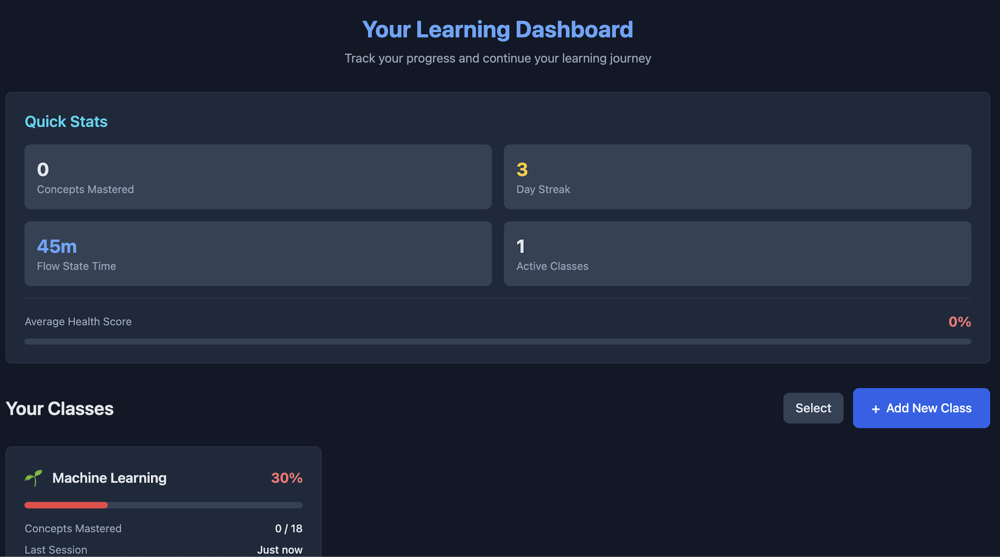
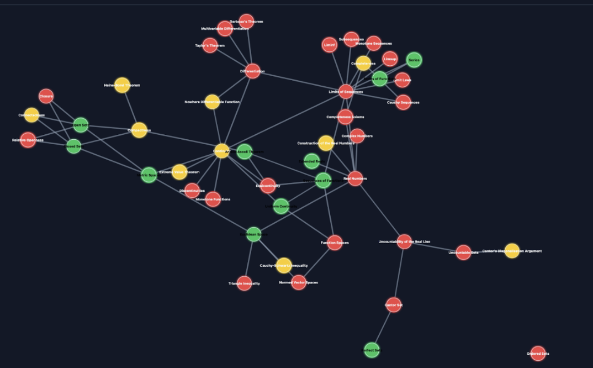
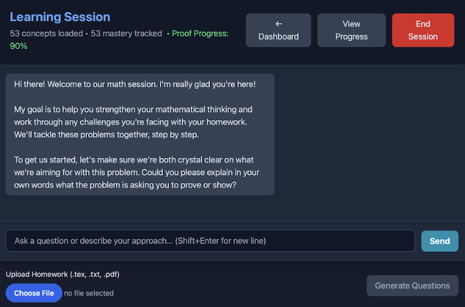

Altera Labs
Verifiable AI Tutoring System for STEM Education
Our Mission
Altera Labs builds a state-aware AI tutoring system that addresses the pedagogical crisis in AI education. While 86% of students use AI tools, they rely on "stateless answer machines" that reduce critical thinking and knowledge retention. Our platform constructs a personalized model of each student's knowledge and learning progression, fostering active problem-solving and equipping faculty with precise data for intervention.
The Problem
Current AI tools create a "substitution" model where students bypass problem-solving. This reduces critical thinking (75%), encourages overreliance (73%), and propagates misinformation (70%). Existing software provides only binary feedback, creating a "black box" of learning loss with no actionable data for instructors.
Our Solution
Our Adaptive Knowledge Tracking engine builds a real-time, personalized model of each student's mastery and misconceptions. This state-aware approach ensures deep understanding while providing faculty and institutions with precise analytics to optimize teaching, improve retention, and save time, resources, and prestige.
Target Audience
B2B: Higher Education Institutions
Our primary market includes higher education institutions with STEM disciplines. We serve Deans, Department Chairs, and IT administrators who need quantifiable impact on student retention and learning outcomes. Our "Course Knowledge Map" provides direct operational value, enabling data-driven teaching decisions.
B2C: Students & Instructors
Students benefit from personalized, adaptive learning that guides them through step-by-step reasoning rather than providing shortcuts. Instructors gain transparent insights into student progress, enabling proactive intervention and optimized course delivery.
Our Team
Peter Seelman
CEO
Johns Hopkins University
BS, Physics | BA, Mathematics
AI researcher with experience at JHU Applied Physics Lab (APL) and NASA. Expert in multi-agent AI systems and B2B customer discovery.
Alex Kroumov
CFO
Johns Hopkins University
BS/MSE, Biomedical Engineering | BS, Applied Mathematics and Statistics
JHU BME and Applied Math researcher specializing in entreprenueurship and financial management.
Akira Lonske
CTO, Lead Developer
Johns Hopkins University
BS Computer Science | BS Applied Mathematics and Statistics
Former Amazon software engineer with expertise in full-stack development, AI systems, and rigorous software engineering practices.
Qiyue (Chris) Yao
Carey Strategic Venture Fellow
Johns Hopkins University, Carey Business School
MS, Business Analytics and Artificial Intelligence
Strategic advisor specializing in business analytics, AI applications, and commercialization strategy.
Our founding team are alumni of the NSF I-Corps program and have collectively raised over $190,000 for previous ventures from the State of Arizona, JHU APL, JHU, VentureWell, NIH, and pitch competitions.
Updates

FUEL Demo Day Pitch Competition Victory
We're thrilled to announce that we won the audience award for our pitch at the Johns Hopkins University Pava Center's FUEL 2025 Demo Day! This award recognizes our innovative approach to better learning and our potential to transform higher education. We plan to use this award to further pursue a partnership with Canvas LMS, and continue to develop our platform. Thank you to the JHU Pava Center for hosting this event, and to the audience for their support!
Our Product
Verifiable AI Tutoring System for STEM Education
Altera Labs is developing a state-aware AI tutoring platform that combines adaptive knowledge tracking with verifiable AI verification. Our proprietary five-phase architecture manages the complete learning lifecycle:
- Adaptive Knowledge Tracking Engine: Our Bayesian Knowledge Tracing (BKT) engine uses precision-weighted Bayesian fusion to mathematically combine prior knowledge with new evidence, generating real-time mastery probabilities for each concept.
- Mathematical Judge Verification System: For proof-based mathematics, our non-AI verification engine uses Lean 4 (the formal proof assistant trusted by the mathematics community) to certify correctness and eliminate AI hallucination risk. Our autonomous solver achieves 100% success rate on test suites.
- State-Aware AI Tutoring: Unlike stateless answer machines, our AI tutor maintains context of student knowledge, guiding through Socratic questioning and step-by-step reasoning.
- Canvas LMS Integration: Seamless integration with Canvas through LTI 1.3, enabling SSO, grade passback, and instructor dashboards.
- Course Knowledge Map: Interactive visualization showing student mastery across all course concepts, providing actionable insights for both students and instructors.
Our platform is designed to build institutional trust through verifiable accuracy, making it the first AI tutoring system to collaborate directly with faculty on improving learning outcomes.
Platform Features

Personalized Learning Dashboard
Track your progress across every concept in your course with a clean, intuitive dashboard. Our adaptive system maps your strengths and weaknesses in real time, so you always know exactly what to study next.

Adaptive Knowledge Map
Behind the scenes, our Bayesian Knowledge Tracing engine continuously updates your mastery level for every concept. The interactive knowledge map gives both students and instructors a transparent view of learning progression, not just right or wrong answers.

Guided Problem-Solving Tutor
Our state-aware AI tutor goes beyond answer-giving. It guides you through step-by-step reasoning, asks targeted questions, and uses verified explanations to help you build understanding—not shortcuts.
Canvas LMS Integration
Current Features
- LTI 1.3 authentication and launch
- Single Sign-On (SSO) through Canvas
- Assignment & Grade Services (AGS) - Grade passback
- Instructor dashboard for viewing student progress
- Student knowledge graph visualization
Technical Specifications
- LTI 1.3 / LTI Advantage compliant
- OAuth 2.0 authentication
- RESTful API
- JWKS endpoint for signature verification
- Supports modern browsers (Chrome, Firefox, Safari, Edge) with HTTPS required.
Developer Resources
LTI Endpoints
LTI 1.3 endpoints for login, launch, and JWKS
- •
/lti/login- OIDC login initiation - •
/lti/launch- LTI message launch - •
/lti/jwks- Public keys for signature verification
Instructor API
Endpoints for instructor dashboard functionality
- •
/api/instructor/students- Get course students - •
/api/instructor/student-graph- Get student knowledge graph